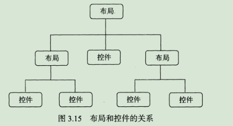
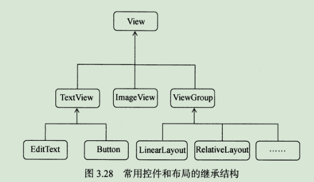

前言
UI开发这块跟代码逻辑无关，所以快速扫过吧，具体内容可以直接找找官方文档。
UI开发
常用的控件
TestView
用于显示文本显示。
Button
用于实现按钮。
EditText
用于实现输入框。
可以使用如下方法获取输入框内容：
1 | EditText editText; |
ImageView
用于在界面上显示图片。
可以用如下代码修改显示的图片为img_2：
1 | ImageView imageView; |
ProgressBar
用于显示进度条，表示我们的程序正在加载一些项目。
我们通过控件的setVisibility()来传入View.VISIBLE、View.INVISIBLE和View.GONE这三种值来设置控件的可见性，从而可以进行ProgressBar和其他控件的切换。
getVisibility()方法可以可判断控件是否可见。
AlertDialog
用于在当前界面弹出一个对话框，这个对话框是置顶于所有界面元素之上的，能够屏蔽掉其他控件的交互能力。
可以在活动中用以下代码创建：
1 | AlertDialog.Builder dialog = new AlertDialog.Builder(MainActivity.this); |
创建完成后就可以用dialog.show()调用该AlertDialog了。
ProgressDialog
弹出对话框以显示进度条。
详解四种基本布局

LinearLayout线性布局
RelativeLayout相对布局
FrameLayout帧布局
百分比布局
创建自定义控件

View是Android中最基本的一种UI组件，它可以在屏幕上绘制一块矩形区域，并能响应这块区域的各种事件。
ListView
RecyclerView
探究碎片
什么是碎片
碎片是一种可以嵌入在活动当中的UI片段，它能让程序更加合理和充分地利用大屏幕的空间。
动态添加碎片
动态添加碎片主要分为5步：
- 创建待添加的碎片实例。
- 获取FragmentManager，在活动中可以直接通过调用getSupportFragmentManager()方法得到。
- 开启一个事务，通过调用beginTransaction()方法开启。
- 向容器内添加或替换碎片，一般使用replace()方法实现，需要传入容器的id和待添加的碎片实例。
- 提交事务，调用commit()方法来完成。
碎片的生命周期
碎片的状态和回调
状态
运行状态：当一个碎片是可见的，并且它所关联的活动正处于运行状态时，该碎片也处于运行状态。
暂停状态：当一个活动进入暂停状态，与它相关联的可见碎片就会进入到暂停状态。
停止状态：当一个活动进入停止状态时，与它相关联的碎片就会进入到停止状态，或者通过调用FragmentTransaction的remove()、replace()方法将碎片从活动中移除，但如果在事务提交之前调用addToBackStack()方法，这时的碎片也会进入到停止状态。
销毁状态：碎片总是依附于活动而存在的，因此当活动被销毁时，与它相关联的碎片就会进入到销毁状态。或者通过调用FragmentTransaction的remove()、replace()方法将碎片从活动中移除，但在事务提交之前并没有调用addToBackStack()方法，这时的碎片也会进入到销毁状态。
回调方法
onAttach()当碎片和活动建立关系的时候调用。
onCreateView()为碎片创建视图（加载布局）时调用。
onActivityCreated()确保与碎片相关联的活动一定已经创建完毕的时候调用。
onDestoryView()当与碎片关联的视图被移除的时候调用。
onDetach()当碎片和活动解除关联的时候调用。